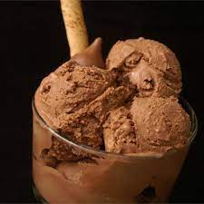

Very Chocolate Ice Cream

A very rich, custard style ice cream with NO raw eggs!
Ingredients
- 3/4 cup sugar
- 1 cup milk
- 1/4 teaspoon salt
- 2 tablespoons unsweetened cocoa powder
- 3 egg yolk, lightly beaten
- 2 ounces semisweet chocolate, chopped
- 2 cups heavy cream
- 1 teaspoon vanilla extract
Steps
- Combine sugar, milk, salt, and cocoa powder in a saucepan over medium heat, stirring constantly. Bring to a simmer. Place the egg yolks into a small bowl. Gradually stir in about 1/2 cup of the hot liquid. and return to the saucepan. Heat until thickened, but do not boil. Remove from the heat, and stir in the chopped chocolate until chocolate is melted. Pour into a chilled bowl, and refrigerate for about two hours until cold, stirring occasionally.
- When chocolate mixture has completely cooled, stir in the cream, and vanilla. Pour into an ice cream maker, and freeze according to manufacturer's directions.
Return to Main Page